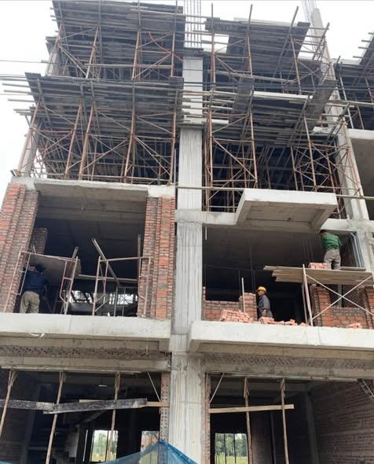

BẢNG GIÁ
Ưu điểm của việc giao thầu thiết kế thi công xây dựng trọn gói:
Nhà thầu thiết kế thi công xây dựng trọn gói sẽ có cái nhìn chính xác hơn về công năng và không gian sử dụng trên bản vẽ so với thực tế để có thể điều chỉnh kiệp thời những thay đổi phù hợp khi thi công, điều này cực kì thuận tiện cho gia chủ, trách được chi phí phát sinh cũng như thời gian do thay đổi thiết kế trong giai đoạn thi công xây dựng.
Bộ hồ sơ, bản vẽ thiết kế kiến trúc, kết cấu, phổi cảnh 3D trước khi thi công xây dựng là cần thiết, giúp quý khách có cái nhìn ngay từ đầu về tổng thể căn nhà mình, để có thể điều chỉnh thay đổi phù hợp về mặt kiến trúc khi xây dựng nhà.

Giá xây nhà trọn gói phụ thuộc vào những yếu tố nào?
Nhà thầu sẽ dựa trên mức đầu tư của gia chủ mong muốn, trên cơ sở tính toán thực tế mà chủ đầu tư muốn xây dựng căn nhà của mình, để cân đối chi phí vật liệu xây thô và vật tư hoàn thiện một cách hợp lý, lập bảng dự toán xây nhà trọn gói chi tiết, từ đó đưa ra đơn giá gói xây nhà trọn gói tính theo m2 xây dựng báo cho gia chủ một cách chính xác nhất.
Giá xây nhà trọn gói tại TPHCM giao động từ 4.500.000đ-5.700.000đ tùy vào quy mô công trình, điều kiện thi công, và vật liệu hoàn thiện, mức đầu tư theo yêu cầu của gia chủ. CÔNG TY TNHH XÂY ĐỨC ANH Tài xin kính gửi quý khách đơn giá xây dựng nhà trọn gói để quý khách tham khảo và chuẩn bị chi phí xây dựng nhà cho mình một cách tốt nhất.

em thêm cách tính diện tích xây dựng – cùng bảng báo giá xây nhà trọn gói – để biết tổng chi phí xây nhà
Đơn giá trên đã bao gồm chi phí vận chuyển và thi công bàn giao công trình trọn gói. Đơn giá trên áp dụng cho nhà có diện tích >70m vông và tổng diện tích =350m2 sàn xây dựng trở lên.
Nhà có diện tích bé hơn 70m2 quý khách liên hệ cung cấp cụ thể nhu cầu sử dụng quy mô xây dựng và điều kiện thi công, CÔNG TY TNHH XÂY DỰNG Đức ANH Tài sẽ báo giá xây nhà trọn gói chi tiết theo bảng dự toán xây dựng đến quý khách.
Trên đây chúng tôi vừa gửi tới quý khách đơn giá xây dựng nhà trọn gói mới nhất áp dụng tại tphcm và các tỉnh lân cận của CÔNG TY TNHH XÂY DỰNG ĐỨC ANH TÀi
Mọi thông tin xin liên hệ số điện thoại 0793166642 hoặc 0907730492
https://www.facebook.com/profile.php?id=100092323196866